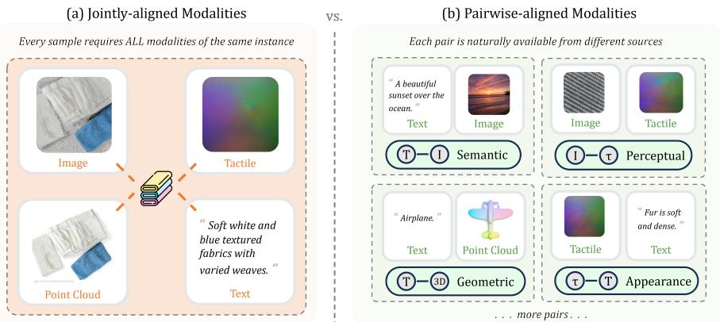
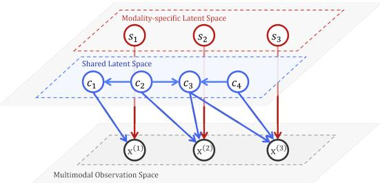

Multimodal representation · P1 · 2026-05-22
Pairwise Modalities：多模态模型不一定需要完整 joint tuples；只要模态图连通，pairwise supervision 可以成为可扩展替代品。
这是本 MVP 的 MinerU 图文样例页：Fig.1 解释动机，Fig.2 解释共享/私有 latent 生成过程。
编号2605.21059
优先级P1
类别Multimodal representation
会议arXiv · MinerU figure demo
方法self-modal reconstruction + pairwise contrastive latent alignment
来源arXiv / OpenReview
先说结论。多模态模型不一定需要完整 joint tuples；只要模态图连通，pairwise supervision 可以成为可扩展替代品。 这是本 MVP 的 MinerU 图文样例页：Fig.1 解释动机，Fig.2 解释共享/私有 latent 生成过程。


它真正改变的是训练信号，而不是榜单数字
self-modal reconstruction + pairwise contrastive latent alignment。这类工作值得被放在通用视觉自监督日报里，不是因为它一定立刻刷新所有 benchmark，而是因为它改变了模型“从哪里拿监督”的方式。
MinerU full.md is now part of the source bundle for this page; the next pass will use it for paper-native English quotes and tighter argument writing.
读这篇时要盯住的风险
当前页面是站点原型，细节还没有逐段引用 MinerU 全文。正式流程会把每篇论文的 abstract、method、caption 和关键表格放进页面生成上下文，并保留至少两段原文引文。
下一步怎么接进日报
每日自动化先筛出 P1/P2，再对 P1 论文跑 MinerU；有 pipeline 或 motivation 图的页面进入 GitHub Pages，飞书只发摘要与入口。